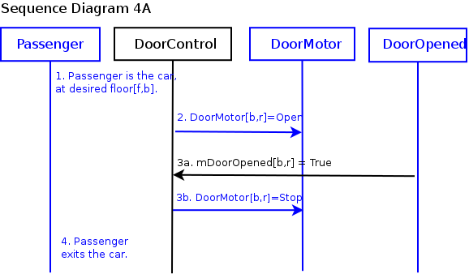
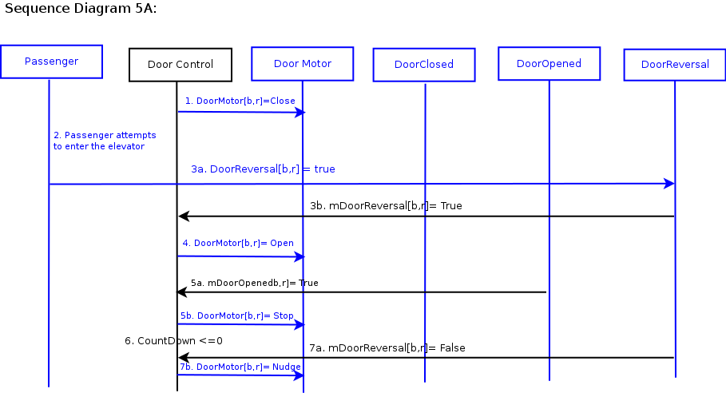
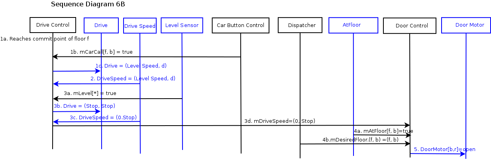
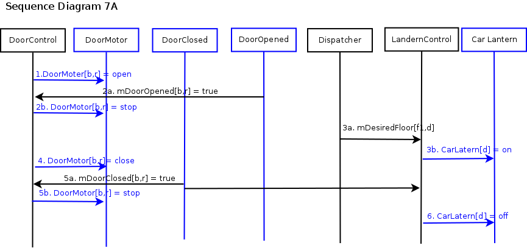
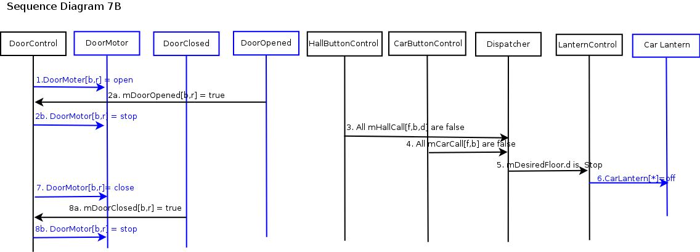
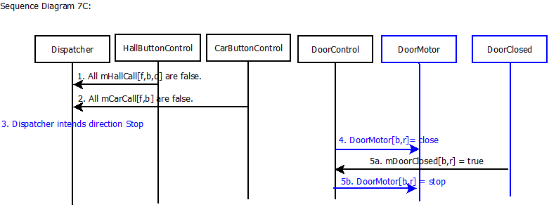
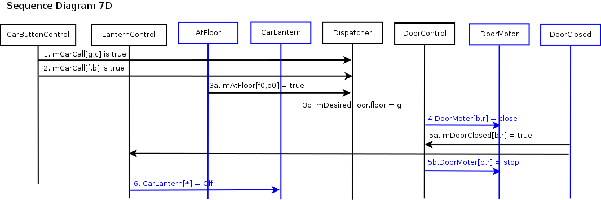

18-649 Scenarios and Sequence Diagrams
18649 <Fall 2013>
Group 9- Yichao Xue
yichaox
Wenhui Hu
wenhuih
Yujia Wang
yujiaw
Scenarios:
- 1. Passenger Makes a Hall Call
- 2. Passenger Makes a Car Call
- 3. Passenger Enters Car
- 4. Passenger Exits Car
- 5. Passenger Triggers Door Reversal
- Scenario 5A (Trace to requirement R-T10)
- Scenario 5B
- 6. Determine Car Position
- Scenario 6A
- Scenario 6B (Trace to requirement R-T6, R-T7)
- 7. Determine Car Direction
- Scenario 7A (Trace to requirement R-T8.1)
- Scenario 7B (Trace to requirement R-T8.2)
- Scenario 7C
- Scenario 7D (Trace to requirement R-T8.3)
- Scenario 7E
- 8. Move Car to Next Floor
- Scenario 8A
- Scenario 8B
- Scenario 8C (Trace to
requirement R-T9)
- 9. Cycle Doors
Use Case 1: Passenger Makes A Hall Call
Scenario 1A: Passenger arrives at a hallway while elevator is elsewhere.
Pre-Conditions:
- All doors are closed.
- Passenger has already arrived at a hallway to use the elevator.
- Car is at another floor.
Scenario:
- Passenger pushes hall call (up or down) button for passenger's desired direction d.
- Passenger sees that corresponding hall button light turns on.
Post-Conditions:
- Elevator has not yet arrived at the passenger's floor.
- All doors are closed.
- Hall button light for passenger's desired direction is on.
Sequence Diagram:
{kind=link}
Scenario 1B: Passenger arrives at a hallway when elevator is already there and the car is traveling in the same direction as desired by passenger.
Pre-Conditions:
- Car is at same floor as passenger.
- Car is traveling in same direction d as desired by passenger.
- At least one door[b,r] is open.
- Hall button light [f,b,d] for passenger's desired direction is off.
Scenario:
- Door[b,r] starts closing.
- Passenger arrives at a hallway [f, b] to use the elevator, with intent to travel in direction d.
- Passenger presses hall call button before doors are fully closed, but after doors are too fully closed for passenger to enter.
- Hall button lights up.
- Doors complete closing. (You might want to change this step; it's OK to do that for this project assignment.)
Post-Conditions:
- Elevator is at the passenger's floor.
- Door is closed.
- Hall button light for passenger's desired direction is on.
Sequence Diagram:

Scenario 1C: Passenger arrives at a hallway when elevator is already there and the car is traveling in opposite direction as desired by passenger.
Pre-Conditions:
- Car is at same floor f as passenger.
- Car is traveling in opposite direction ~d than direction d desired by passenger.
- At least one Door[b,r] is open.
- Hall button light for passenger's desired direction is off.
Scenario:
- Door[b,r] starts closing.
- Passenger arrives at a hallway [f,b] to use the elevator going in direction d.
- Passenger presses hall call button before doors are fully closed, but after doors are too fully closed for passenger to enter.
- Hall button lights up.
- Doors complete closing.
Post-Conditions:
- Elevator is at the passenger's floor.
- All doors are closed.
- Hall button light for passenger's desired direction is on.
Sequence Diagram:
{kind=link}
Use Case 2: Passenger Makes A Car Call
Scenario 2A: Passenger is in the car and elevator is not at the desired destination floor.
Author name: Yichao Xue (yichaox@andrew.cmu.edu)
Pre-Conditions:
- Car is at floor f, with at least one Door[b,r] open.
- Passenger is in the car and elevator is not at the desired destination [g,c], where f != g. Also, b might or might not be equal to c.
- Car call button for the desired destination is not lit.
Scenario:
- Door[b, r] starts closing.
- The passenger presses the car call button CarCall[f, b] for desired destination [f, b].
- The CarLight[f,b] turns on.
- Doors complete closing.
Post-Conditions:
- The elevator is at some floor other than passenger's desired floor.
- All doors are closed.
- The call light for passenger's desired destination [f, b] is on.
Sequence Diagram:
2B: Passenger is in the car and the elevator has arrived at the passenger's desired floor, but passenger has not yet exited the car as the doors begin to close.
Author name: Yichao Xue (yichaox@andrew.cmu.edu)
Pre-Conditions:
- Passenger is in the car.
- Elevator has arrived at the desired hallway, but the passenger has not yet exited the car.
- At least one door[b,r] is open.
Scenario:
- CountDown timer reaches zero.
- Door[b, r] starts closing.
- Passenger intends to exit the elevator before doors are fully closed, but after doors are too fully closed for passenger to exit.
- Doors are fully closed.
Post-Conditions:
- Elevator is at passenger's desired floor.
- All doors are closed.
- Passenger is in the car.
Sequence Diagram:
{kind=link}
2C: Passenger is in the car and the elevator has arrived at the passenger's desired floor with doors shut, door starts to open.
Author name: Wenhui Hu (wenhuih@andrew.cmu.edu)
Pre-Conditions:
- Passenger is in the car.
- Elevator has arrived at the desired hallway, but the passenger has not yet exited the car.
- All doors are closed.
Scenario:
- Door[b, r] starts opening.
- CarLight[f,b] turns off.
- Doors are fully opened.
Post-Conditions:
- Elevator is at passenger's desired floor.
- At least one door is open.
- CarLight[f,b] is off.
Sequence Diagram:
Use Case 3: Passenger Enters Elevator
Scenario 3A: Passenger is waiting at a hallway for the elevator and has already pressed the hall call button.
Author name: Yichao Xue (yichaox@andrew.cmu.edu)
Pre-Conditions:
- Car is about to arrive at a hallway [f,b] at which passenger is waiting.
- The hall call button for passenger's desired direction d has already been pressed
- The elevator is going in direction d.
- Passenger is outside the car.
- All doors are closed.
Scenario:
- Passenger is waiting at a hallway.
- Car arrives at floor f, door[b, r] starts opening.
- All doors are fully open.
- Passenger enters the elevator.
- Passenger presses the car call button CarCall[f, b] for desired destination [f, b].
- The car light turns on.
- Door[b, r] starts closing.
- Doors complete closing.
Post-Conditions:
- Elevator is at passenger's floor.
- Passenger is in the car.
- The call light for passenger's desired destination [f, b] is on.
- All doors are closed.
Sequence Diagram:
Use Case 4: Passenger Exits Elevator
Scenario 4A: Passenger is in the elevator as it arrives at the passenger's desired hallway.
Author name: Wenhui Hu (wenhuih@andrew.cmu.edu)
Pre-Conditions:
- Passenger is inside the car, traveling to desired floor f and hallway b.
- Car is traveling in direction d.
- All doors are closed.
Scenario:
- Car arrives at desired floor and hallway [f, b] with doors shut.
- Door[b, r] starts opening.
- Door[b, r] completes opening.
- Passenger exits the car while the Door[b, r] remains open.
Post-Conditions:
- Elevator is at the passenger's floor.
- Elevator is at the passenger's hallway.
- Passenger is outside the elevator.
Sequence Diagram:
Use Case 5: Passenger Triggers Door Reversal
Scenario 5A: Passenger attempts to enter the car as the doors begin to close.
Author name: Priya Mahajan(priyam@andrew.cmu.edu)
Pre-Conditions:
- Passenger is outside the car.
- Car is stopped at passenger's floor f and hallway b.
- At least one door[b,r] is open.
Scenario:
- Door[b,r] starts closing.
- Passenger attempts to enter.
- Passenger triggers the door[b,r] reversal.
- Door starts opening.
- Door opens completely.
- CountDown timer reaches zero.
- Door starts nudging.
Post-Conditions:
- Passenger is inside the car.
- Elevator is stopped and both elevator and Passenger are at the same floor f.
- Door[b,r] is nudging.
Sequence Diagram:
Scenario 5B: Passenger attempts to exit the car as the doors begin to close.
Author name: Priya Mahajan(priyam@andrew.cmu.edu)
Pre-Conditions:
- Passenger is inside the car.
- Car is stopped at passenger's floor f and hallway b.
- At least one door[b,r] is open.
Scenario:
- Door[b,r] starts closing.
- Passenger attempts to exit.
- Passenger triggers the door[b,r] reversal.
- Door starts opening.
- Door opens completely.
Post-Conditions:
- Passenger is outside the car.
- Car is stopped at floor f and hallway b.
- All doors[b,r] are completely open.
Sequence Diagram:
{kind=link}
Use Case 6: Determine Car Position
Scenario 6A: Car moves from hallway f on floor x to adjacent hallway g on floor y and stops.
Author name: Priya Mahajan(priyam@andrew.cmu.edu)
Pre-Conditions:
- Car is at hallway [f, b].
- All elevator doors are closed.
- Car is moving in hoistway.
Scenario:
- Car Position indicator shows floor x.
- Car Call Button for floor[y,g] is already lit.(Desired floor)
- Car is moving towards floor y.
- Car reaches floor y (Desired floor).
- Car Position Indicator shows floor y
- Car levels.
Post-Conditions:
- Car is leveling at floor y
- Doors are closed.
Sequence Diagram:
{kind=link}
Scenario 6B: Car Stops at Floor f, Hallway b where there is a pending Car Call.
Author name: Yujia Wang(yujiaw@andrew.cmu.edu)
Pre-Conditions:
- Car reaches commit point of hallway [f, b]
- Car Call Button[f, b] is already lit.
- Car is moving in hoistway at slow speed.
- All doors are closed.
Scenario:
- Car speed decreases.
- Car moves at level speed.
- Car stops at floor f.
- mAtFloor[f,b] is true and mDesiredFloor.f is the same as f.
- Door[b, r] starts opening.
Post-Conditions:
- Car stopped at floor f.
- Doors are opening.
Sequence Diagram:
{kind=link}
Use Case 7: Determine Car Direction
Scenario 7A: Elevator opens doors when Dispatcher's intended direction is Up or Down.
Author name: Yujia Wang (yujiaw@andrew.cmu.edu)
Pre-Conditions:
- Elevator is stopped at floor f, and AtFloor[f,b] was last received as True.
- Dispatcher intends direction d and is enabling pickup in hallway b.
- All doors are closed.
- Both Car Lanterns are off.
Scenario:
- Door[b,r] starts opening.
- Door[b,r] completes opening.
- CarLantern[d] turns on and stays on while elevator is
enabling pickup.
- Door[b,r] starts close.
- Door[b,r] completes closing.
- CarLartern[d] turns off.
Post-Conditions:
- All doors are closed.
- All CarLanterns are off.
- Elevator is at floor f, intends to move in direction d.
Sequence Diagram:
Scenario 7B: Elevator arrives at a hallway and the desired direction is Stop.
Author name: Yujia Wang (yujiaw@andrew.cmu.edu)
Pre-Conditions:
- Elevator is stopped at floor f, and AtFloor[f,b] was last received as True.
- Dispatcher intends direction Stop (i.e., no selected direction), with enabled pickup in hallway b.
- All doors are closed.
- Both Car Lanterns are off.
Scenario:
- Door[b,r] starts opening.
- Door[b,r] completes opening.
- There is no other hall call from any other floor.
- All Car Call lights are inactive or all CarCallLight[f,b] are false.
- Desired direction is Stop.
- Car Lantern stays off.
- Door[b,r] starts closing.
- Door[b,r] completes closing.
Post-Conditions:
- All doors are closed.
- Elevator is at floor f.
Sequence Diagram:
Scenario 7C: Elevator doors close on a hallway.
Author name: Yujia Wang (yujiaw@andrew.cmu.edu)
Pre-Conditions:
- At least one Door[b,r] is open.
Scenario:
- There is no other hall call from any other floor.
- All Car Call lights are inactive or all CarCallLight[f,b] are false.
- Dispatcher intends direction Stop.
- Door[b,r] starts closing.
- Door[b,r] completes closing.
Post-Conditions:
- All doors are closed.
- Elevator is at floor f, hallway b.
Sequence Diagram:
Scenario 7D: Elevator determines desired floor when there is car call for both {floor g, hallway c} and {floor f, hallway b}
Author name: Wenhui Hu(wenhuih@andrew.cmu.edu)
Pre-Conditions:
- Car stops at floor f0.
- All doors are open.
- CarLantern is already On for direction d.
- Passenger1 pushes car button for {floor g, hallway c} which
is on the way of direction d.
- Passenger2 pushes car button for {floor f, hallway b} which
is not on the way of direction d.
- Dispatcher sets mDesiredFloor.floor as g.
- Door[b,r] starts closing.
- Door[b,r] completes closing.
- CarLantern[d] turns Off.
- All doors are closed.
- All CarLanterns are off.
- Elevator is at floor f0, intends to move to floor g in
direction d.

Scenario 7E: Elevator determines desired floor when there is hall call for both {floor g, hallway c, direction ~d} and {floor f, hallway b, direction ~d}
Author name: Wenhui Hu(wenhuih@andrew.cmu.edu)
Pre-Conditions:
- Car stops at floor f0.
- All doors are open.
- CarLantern is already On for direction d.
- Passenger1 pushes hall call button for {floor g, hallway c,
direction ~d} which is on the way of direction d and has
different desired direction as d.
- Passenger2 pushes hall call button for {floor f, hallway b,
direction ~d} which is on the way of direction d and has
different desired direction as d.
- Dispatcher sets mDesiredFloor.floor as max(abs(f0-f),
abs(f0-g)).
- Door[b,r] starts closing.
- Door[b,r] completes closing.
- CarLantern[d] turns Off.
- All doors are closed.
- All CarLanterns are off.
- Elevator is at floor f0, intends to move to floor g in direction d.
Sequence Diagram:
Use Case 8: Move Car to Next Floor
Scenario 8A: Elevator moves from {floor f, hallway b} to {floor g, hallway c} in direction d.
Note: You will want to create other scenarios that involve fast speed for your elevator, but this is a starting point.
Author name: Wenhui Hu (wenhuih@andrew.cmu.edu)
Pre-Conditions:
- Elevator is at floor f, with at least one Door[b,r] open.
- Drive is stopped.
Scenario:
- mAtFloor f is true, and is not the same as mDesiredFloor g.
- Door[b,r] starts closing.
- Door[b,r] completes closing.
- Drive is set to Slow for direction d.
- Car starts moving towards floor g, DriveSpeed is between Stop and Slow for direction d.
- Car arrives at floor g.
- Drive is set to Level for direction Up.
Post-Conditions:
- Elevator is at floor g.
- Drive is Leveling.
- All doors are closed.
Sequence Diagram:
Scenario 8B: Elevator Door[f, b] is
open between floors
Author name: Yujia Wang(yujiaw@andrew.cmu.edu)
Pre-Conditions:- Car is moving between floors
- Door[f, b] has already opened
- Dispatcher sets the mDesirdFloor to [1, None, d]
- Car stops
- Car is stopped
Scenario 8C: Elevator moves towards
{floor f, hallway b} at fast speed.
Author name: Yujia Wang(yujiaw@andrew.cmu.edu)
Pre-Conditions:- Car is moving at speed (Slow Speed, d).
- mDesiredFloor.f has been set to f.
- Car hasn't reached commit point of floor f.
- DriveControl sets drive to (Fast, d).
- Car moves at speed (Fast Speed, d).
- Car reaches commit point of floor f for Fast Speed.
- DriveControl sets drive to (Slow, d).
- Car moves at speed (Slow Speed, d).
Post-Conditions:
- Car is moving at speed (Slow, d).
- Car has reached commit point of floor f.
Use Case 9: Cycle Doors
Scenario 9A: Elevator stops at hallway and doors open. Dispatcher computes next desired floor just as doors open. Doors close.
Author name: Wenhui Hu (wenhuih@andrew.cmu.edu)
Pre-Conditions:
- Car is stopped.
- AtFloor[f,b] was last received as True.
- All doors are closed.
Scenario:
- Door[b,r] starts opening.
- Door[b,r] completes opening.
- mDesiredFloor.floor is set to Target.
- Door[b,r] starts closing.
- Door[b,r] completes closing.
Post-Conditions:
- Elevator is at floor f.
- All doors are closed.